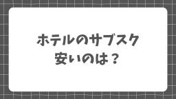
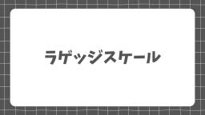
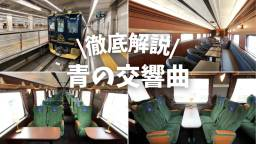

nrtlog.com
https://nrtlog.com/
nrtlog.com
フィード
【関空】国際線カードラウンジ「NORTH LOUNGE」へ潜入！入れるゴールドカードや飲食物・料金を画像付きで徹底解説！プライオリティパスは？
nrtlog.com
関西国際空港(関空)の第1ターミナル国際線フロアにあるカードラウンジ「NORTH LOUNGE」へ潜入レビュー！無料で入れる対象ゴールドカードやプライオリティパスの利用可否、サービス内容や料金、ドリンク・軽食、座席の様子まで画像付きでわかりやすく解説！
14時間前

ホテルのサブスクで安いのはどれ？ツギツギ・HafHなど主要サービスを比較！自腹で加入した筆者が向いている人を解説！
nrtlog.com
ホテルのサブスクで安いのはどれ？HafH・ツギツギ・ADDressの特徴や料金、契約期間の縛り、1泊あたりの目安を徹底比較！自腹で加入して元が取れるか検証！迷ったら縛りなしで月3,400円から試せるHafHがおすすめ！
2日前

ラゲッジスケールはダイソーなど100均や無印で買える？おすすめ3選を毎月旅行に行く筆者が厳選！スーツケースの重さを測るはかり！
nrtlog.com
スーツケースの重さを測るラゲッジスケールはダイソーやセリアなど100均、無印で買える？キャンドゥでの販売状況や、ない時の測り方まで解説！毎月旅行に行く筆者が自腹レビューでおすすめ商品3選を紹介！
3日前
【徹底比較】J-WESTカードはどれがいい？ベーシックとエクスプレスの違いや年会費・ポイント・国際ブランド、実際に使ってみてわかったおすすめを紹介！
nrtlog.com
J-WESTカードはどれがいい？ベーシックとエクスプレスの違いや国際ブランドの違い、ゴールドと通常、OSAKA STATION CITY・LUCUA・ビックカメラなど全12種類の年会費・ポイント還元率を実際に使う筆者が徹底比較！紹介特典でお得に作る方法も紹介！
4日前

【近鉄】観光特急「青の交響曲」を徹底解説！予約が取れない？実際に乗って写真付きで正直レビュー！料金・おすすめの座席や停車駅も紹介！
nrtlog.com
近鉄の観光特急「青の交響曲（シンフォニー）」を実際に乗車して徹底レビュー！大阪阿部野橋駅から吉野駅までの運行区間や停車駅、運行ダイヤ、デラックスシート・サロン席・ツイン席の特徴、料金を紹介！さらに、人気のツイン席に乗車した感想や車内の様子、予約が取れないときのコツ、チケットレスサービスでの予約方法、お得に乗る方法まで！
5日前
【韓国】ロッテワールドの制服レンタル徹底解説！おすすめショップ3店比較や値段、予約の必要性も紹介！
nrtlog.com
ロッテワールドの制服レンタルを実際に体験した筆者が徹底解説！ソウル教服・梨花制服・感性制服のおすすめ3店を比較し、値段や予約の必要性、予約なしで行けるか、デポジットなどの持ち物、アクセスを紹介！ロッテワールドのチケットをお得に買う方法も！
6日前
【正直レビュー】ホテルインディゴ犬山有楽苑の犬山城ビューのお部屋に宿泊！お部屋の様子や朝食・アフタヌーンティー・バーを写真付きで紹介！
nrtlog.com
ホテルインディゴ犬山有楽苑の犬山城ビュー客室に宿泊した正直レビュー！お部屋の様子やバルコニーからの絶景、レストランでの朝食、映えるアフタヌーンティー、夜のバー、天然温泉「白帝の湯」や有楽苑まで写真付きで詳しく紹介！お得な予約方法も解説！
7日前
【スリランカ】コロンボを代表する仏教寺院・ガンガラーマ寺院へ訪問！見どころや入場料、服装の注意点を解説！
nrtlog.com
コロンボを代表する仏教寺院・ガンガラーマ寺院を実際に訪れた筆者が、本堂や博物館、安倍晋三元首相の肖像画、湖上のシーマ・マラカなどの見どころを写真付きで紹介！入場料や営業時間、服装の注意点、アクセス、お祭りの時期も解説！
8日前
【中国・重慶】実際に行って分かった見どころと必要日数！3泊4日のモデルコースや夜景、ドローンショーの鑑賞スポットを徹底解説！
nrtlog.com
中国のサイバーパンク都市・重慶。実際に訪れた筆者が観光の見どころや必要日数、3泊4日のモデルコースを徹底解説！夜景やドローンショーの穴場鑑賞スポット、重慶へのお得な行き方や Trip.com を活用した予約方法も紹介！
8日前

【自腹レビュー】東急のツギツギの評判や口コミは？予約が取れないのは本当？3か月使った結果を正直に解説！
nrtlog.com
東急のホテルサブスク「ツギツギ」に自腹で3か月加入した筆者が評判や口コミを正直レビュー！予約が取れないのは本当か、料金から見た1泊あたりの費用や元は取れるのか、東急系列ホテルの空室状況、直接予約との比較も解説！
9日前
【2026年10月最新】J-WESTカードはどのポイントサイト経由がお得？入会キャンペーンと紹介キャンペーンを解説！
nrtlog.com
J-WESTカードを最もお得に作る方法！紹介キャンペーンと入会キャンペーンの併用が最強！WESTERポイントをザクザク稼げるクレジットカードのお得な初め方を徹底解説！
9日前
【スリランカ航空】成田-コロンボ間の搭乗レビュー！UL454・455 気になる機内食や機内の様子を写真付きで紹介！
nrtlog.com
スリランカ航空(成田〜コロンボ・UL455/UL454便)の搭乗記&レビュー！機内食のカレーやセイロンティー、座席の広さ、アメニティ、機内Wi-Fiを写真付きで解説。気になるメリットやデメリット、手荷物ルールも紹介！
10日前
厦門航空(Xiamenair)は評判悪い？LCCなの？安全性やサービス、安さの理由を徹底解説！
nrtlog.com
厦門航空(Xiamenair)の評判や安全性を徹底解説。LCCとの違いや航空券が安すぎる理由、所属航空連合や、無料トランジットホテルや機内食などのサービス、注意点を実際に行った筆者が正直レビュー！
11日前
【スリランカ】コロンボ市内を乗り継ぎ時間で観光！6時間から1泊までトランジット時間別のおすすめモデルコースを紹介！
nrtlog.com
コロンボの乗り継ぎ時間で市内観光した筆者が、6〜12時間・1泊のトランジット時間別モデルコースを紹介！ロータスタワーやガンガラーマ寺院、ペター・マーケットの回り方、必要なビザ、空港から市内への移動手段、荷物預かりについても解説！
12日前
厦門航空の国際線&国内線エコノミークラスの機内食を写真付きで正直レビュー！ドリンクやメニューの調べ方・変更方法も解説！
nrtlog.com
厦門航空の国際線・国内線エコノミークラス機内食を徹底解説！実際に搭乗して食べた機内食の味やメニュー、ドリンクの種類を写真付きで正直レビュー！事前予約での機内食変更方法やメニューの調べ方、注意点など紹介！
13日前
【日本人は無料】スリランカの観光ビザの申請方法を実際の写真付きで徹底解説！スリランカ渡航の注意点も！
nrtlog.com
スリランカの観光ビザ(ETA)は日本人も事前申請が必須ですが、2026年5月から30日間無料で取得可能！公式サイトでのオンライン申請手順を実際の画面付きで日本語で解説！し、必要なもの、ダブルエントリー、スリランカ渡航の注意点も！
14日前
パスポートケース・カバーはいらない？必要な人と不要な人の違い、スキミング防止の必要性を毎月海外へ行く筆者が徹底解説！おすすめの商品も紹介！
nrtlog.com
パスポートケース・カバーは海外旅行に必要か、いらないかを解説！空港で外す手間などいらない理由、外務省の情報をもとにしたスキミング防止の必要性、必要な人と不要な人の違い、ケースなしの持ち歩き方や選ぶならおすすめのタイプ・商品も紹介！
14日前
【2026年10月最新】Klook(クルック)割引クーポンコードまとめ！毎月使う筆者がお得にチケットやツアーを買う方法を徹底解説！
nrtlog.com
【2026年10月最新】Klook(クルック)で今すぐ使える割引クーポンコード一覧！初回500円OFFやアプリ限定5%OFFに加え、チームラボやスカイビルなど有名施設が割引に！海外ディズニー・USJ・台湾・韓国で使える最新コードを完全網羅。クーポンの使い方や期限なども解説！
15日前
【寝台特急サンライズ号】瀬戸と出雲の違いは？シャワーカードを買うコツやきっぷを手に入れる方法についても解説！
nrtlog.com
愛用者がサンライズ瀬戸と出雲の違いやシャワーカードについて解説！運行区間の違いやチケット確保のコツ、シャワーカードを買うための乗車位置まで紹介！日本唯一の定期寝台特急を攻略！
15日前
【コロンボ空港】「Lotus First Class Lounge」に潜入！プライオリティパスやシャワー、食事などの提供物・ラウンジの様子を写真付きで紹介！コロンボ・バンダラナイケ国際空港(CMB)
nrtlog.com
コロンボ・バンダラナイケ国際空港の「Lotus First Class Lounge」に潜入レビュー！プライオリティパスで入れる一番おすすめのラウンジ！24時間営業の店内、シャワールームや無料の食事・アルコール・Wi-Fiまで写真付きで徹底解説！
16日前
【当サイト限定】Holafly(オラフライ)の5%OFF限定クーポンコード！無制限のeSIMをお得に！
nrtlog.com
Holafly(オラフライ)の全商品が5%OFFになる当サイト限定割引クーポンコード(プロモコード)を公開！海外でデータ無制限で使える人気eSIMのお得な購入手順や決済画面での入力方法、エラー時の対処法まで分かりやすく解説。
17日前
【2026年10月最新】VELTRA(ベルトラ)のクーポンコードはある？誰でも使える割引やJCB・エポスなどクレカ優待を何度も使う筆者が解説！
nrtlog.com
【2026年10月最新】VELTRA(ベルトラ)のクーポンコード情報！初回クーポンや3,000円OFFの現状、誰でも使えるセール・キャンペーン、JCB・エポス・セゾン・イオンカードの優待割引と取得方法を、何度も使う筆者が徹底解説！
17日前
桂林两江国際空港の国内線「First & Business Class Lounge」へ潜入！プライオリティパスは？入り方や飲食物・料金について画像付きで徹底解説！
nrtlog.com
桂林两江国際空港の国内線「First & Business Class Lounge(ファースト & ビジネスクラスラウンジ)」を徹底解説。プライオリティパスの対応可否、ラウンジの場所や入り方、食事・ドリンクのメニューを実際に行った筆者が正直レビュー!
18日前
ANAのSFC改悪が一部見直しへ！SFC LITEもラウンジ利用可に。9月発表の新制度をSFC会員の筆者が徹底解説！
nrtlog.com
ANAのSFC改悪が9月に一部見直し！年間決済額300万円未満のSFC LITEも国内線は混雑時を除きラウンジ利用可能に！事前予約や再入会、4月案からの変更点をSFC会員の筆者が解説します！
19日前
JALカード naviの「語学検定ボーナスマイル」とは？申請方法や対象の資格、実際の手順の写真付きで徹底解説！
nrtlog.com
JALカード naviの特典「語学検定ボーナスマイル」を徹底解説！英検やTOEIC、日商簿記などの対象資格の一覧や獲得できるマイル数、Web申請手順や必要書類の撮影方法、申請期限や回数制限の注意点まで写真付きで紹介！
20日前
【正直レビュー】スカイプロムナードに行ってきた！名古屋の屋外展望台の夜景や料金、迷わない行き方とお得な予約方法も解説！
nrtlog.com
名古屋・ミッドランドスクエアの屋外展望台スカイプロムナードに行った正直レビュー。平日と土日で違う料金や営業時間、雨の日、42階入口までの迷わない行き方、夜景のおすすめ時間帯や所要時間、アソビューでのチケット予約方法を解説。
20日前
スリランカルピーの両替はどこがいい？お得な入手方法！コロンボ・バンダラナイケ国際空港の両替とATMキャッシングを徹底比較！日本(東京・大阪)で両替できる？最適解も紹介！
nrtlog.com
スリランカルピー(LKR)の両替・お得な入手方法を徹底解説！日本国内(東京・大阪)での事前両替は非現実的！コロンボ空港や銀行の両替やATMキャッシング、Wise・Revolutデビット引き出しを使おう！最適解も紹介！
21日前
福州長楽国際空港の国際線「First & Business Class Lounge」へ潜入！プライオリティパスは？入り方や飲食物・料金・シャワーについて画像付きで徹底解説！
nrtlog.com
福州長楽国際空港の国際線「First & Business Class Lounge(ファースト & ビジネスクラスラウンジ)」を徹底解説。プライオリティパスの対応可否、ラウンジの場所や入り方、食事・ドリンクのメニューを実際に行った筆者が正直レビュー!
22日前
【スリランカ】配車アプリ「PickMe」の登録方法と使い方やUberとの違いを徹底解説！トゥクトゥクやタクシーのぼったくりを回避しよう！
nrtlog.com
スリランカの配車アプリ「PickMe(ピックミー)」の登録方法や使い方、Uberとの違いを徹底解説！ドライバーが来ない時や見つからない時、お釣りトラブルの注意点まで紹介！トゥクトゥクやタクシーの事前料金確定でぼったくりを回避！日本でのSMS認証やクレジットカード登録、eSIM準備まで！
23日前
【世界遺産】桂林カルスト一望できる絶景「相公山」の入場料や行き方は？個人手配で行った筆者が攻略方法を解説！
nrtlog.com
桂林の絶景「相公山(シャンゴンシャン)」の行き方や入場料を徹底解説。桂林(けいりん : グイリン)・阳朔(陽朔 : ヤンシュオ)からのアクセス、日の出の時間、チャーター(包車)の手配方法を個人手配で行った筆者が解説。漓江カルストを一望する絶景スポットの攻略法や情報を紹介！
24日前